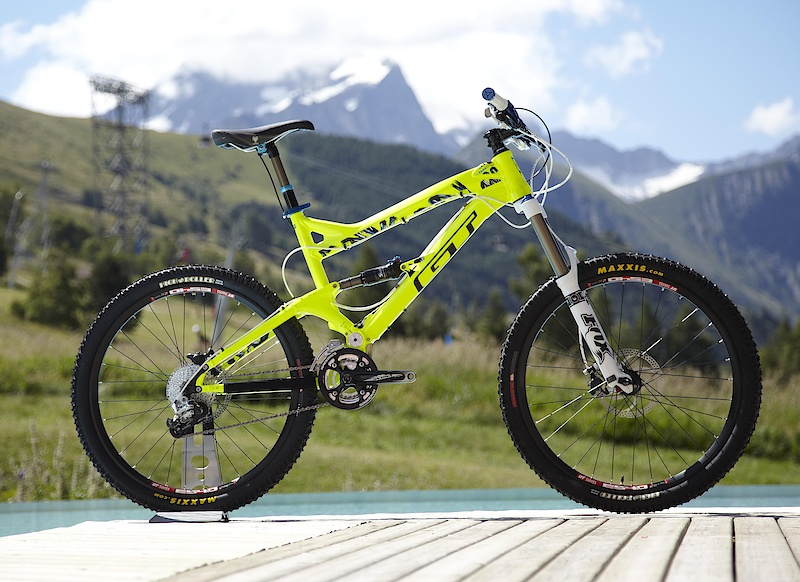
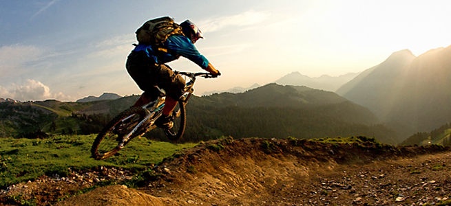
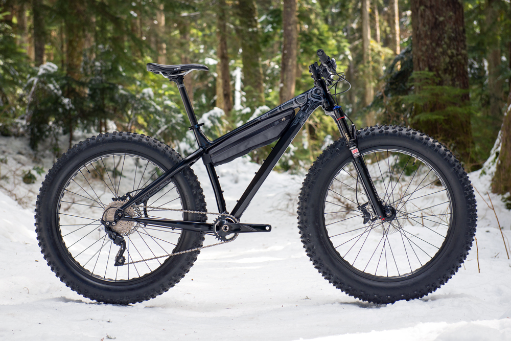
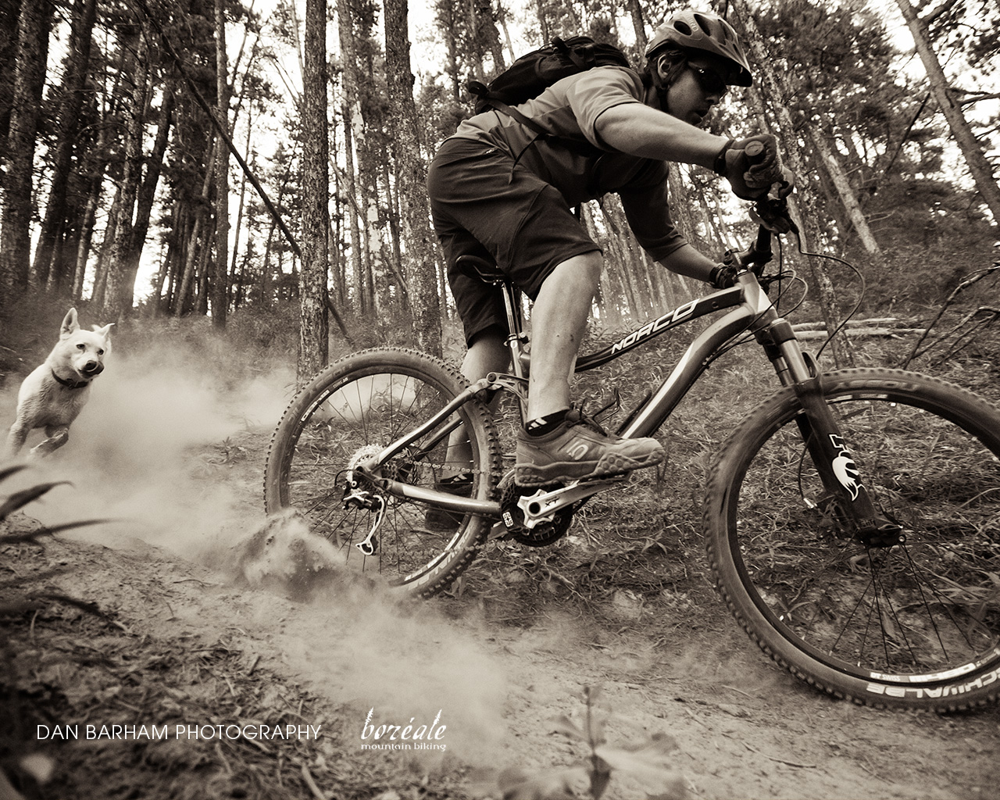

The mountain bike is most common bicycle that people buy out of comfortability. Mountain bikes come with gears and shocks. They are made specifically ride in rough terrain.
Mountain bikes normally come with wide grip tires that dig into the dirt. This increases traction with the ground thus giving it more handling in rough terrains. This bike is perfect if you need to travel over a mountain to get to work.
Reasons you may want a mountain bicycle: Comfortability(shocks absorb most impact between the bicycle and yourself), Handling(the wide grip tires will have you stuck to the floor). Reasons you may not want a mountain bike: Slow (you're going to see all the road bikers past you), maintenace(The gears and chain will collect dirt, and the chain will lose alignment)
   